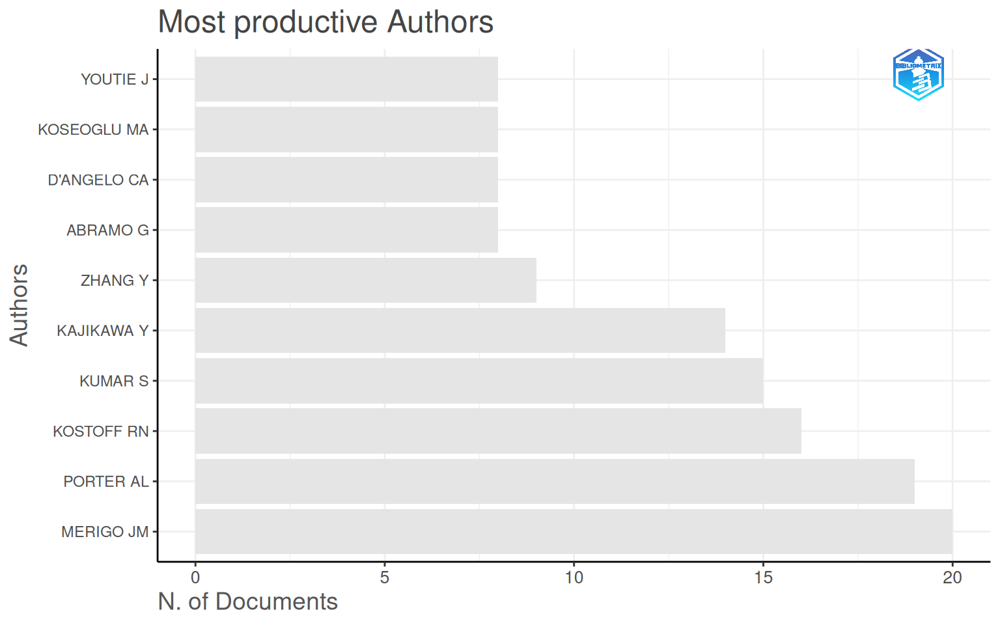
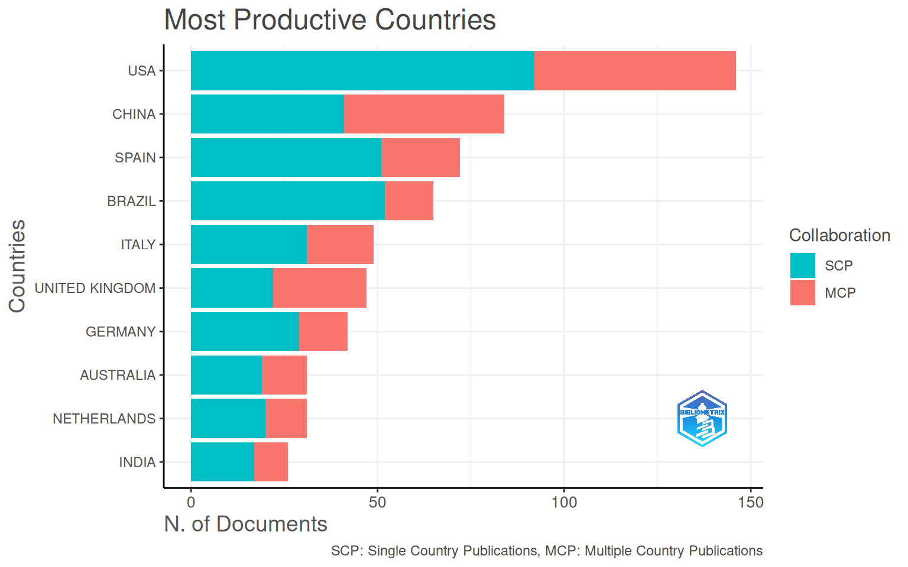
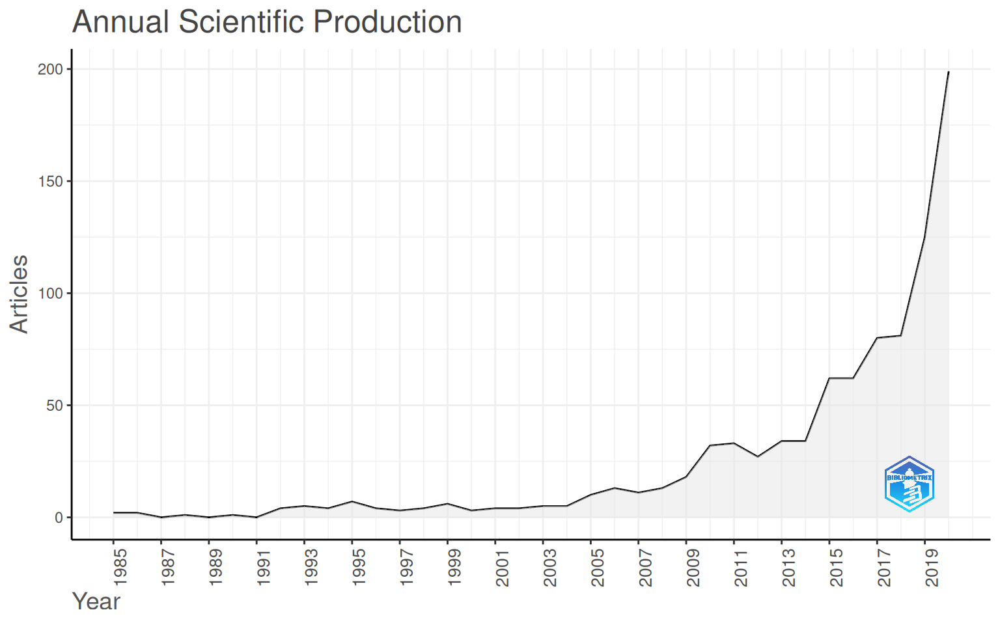
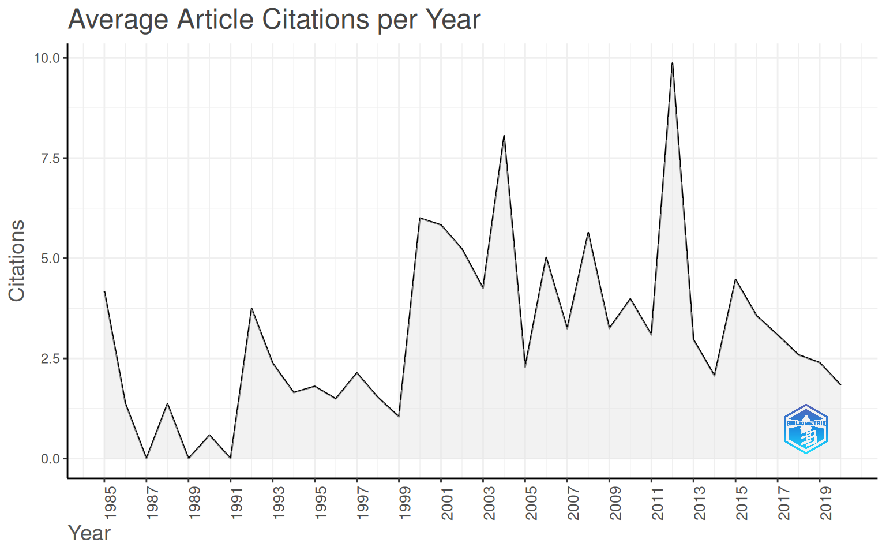

install.packages("bibliometrix") # funções de análise
install.packages("bibliometrixData") # bases de exemplo (inclui "Management")Bibliometria Analítica e Indicadores Científicos
Atividade prática — Equipe 7 · bibliometrix & Biblioshiny
Como funciona esta atividade
Tema da Equipe 7: Bibliometria analítica e indicadores científicos. Ferramenta:
bibliometrix(pacote R) + Biblioshiny (a interface web do mesmo pacote).
Tudo o que se faz clicando no Biblioshiny corresponde a uma função do bibliometrix. Por isso você pode fazer a atividade por dois caminhos — escolha o que preferir; os dois respondem as mesmas 7 perguntas sobre o mesmo corpus de exemplo (dataset Management).
- 🟢 Trilha Geral (recomendada) — Biblioshiny no Hugging Face. Sem instalar nada: você duplica a nossa instância, abre no navegador e responde clicando.
- 🔴 Trilha dos Bravos — For the Braves and True. Para quem quer ver o motor por baixo: instala o R + RStudio e roda o
bibliometrixno código.
A entrega: 7 perguntas, 1 por grupo
- São 7 perguntas (na seção As 7 perguntas). Cada grupo fica responsável por uma.
- Responda usando o Biblioshiny (ou o código), tire um screenshot da tela que mostra a resposta e escreva uma frase explicando.
- Entre na apresentação compartilhada do Google e cole o screenshot no slide do seu grupo: 👉 Apresentação compartilhada (Google Slides)
Esta página renderizada já mostra as saídas do código — use como gabarito para conferir se a sua resposta no Biblioshiny bate.
🟢 Trilha Geral — Biblioshiny no Hugging Face
Sem instalar nada, tudo no navegador.
Crie uma conta (gratuita) no Hugging Face.
Abra a nossa instância e clique em Duplicate this Space (botão abaixo) → deixe o hardware em CPU basic (free) → Duplicate Space. A primeira build leva alguns minutos (acontece uma vez só por cópia).

Duplicate this Space Abra a sua cópia. Na tela Import or Load, escolha “Use a sample collection” → dataset Management → Start.
Navegue pelos menus para responder a pergunta do seu grupo (o mapa de cada pergunta está em As 7 perguntas).
Screenshot da tela com a resposta → cole no slide do grupo.
Tier gratuito: o Space “dorme” após 48h sem uso (acorda sozinho no próximo acesso) e o armazenamento é temporário — exporte o que quiser guardar.
🔴 Trilha dos Bravos — For the Braves and True
Para quem quer rodar o bibliometrix no código. Instale o R e o RStudio e siga abaixo.
Instalação (uma única vez)
library(bibliometrix)Carregar o mesmo corpus de exemplo
É exatamente a sample collection Management que a Trilha Geral carrega pela interface:
data(management, package = "bibliometrixData")
M <- management
dim(M) # nº de documentos (linhas) x nº de campos (colunas)[1] 898 67Análise descritiva (a base de tudo)
biblioAnalysis() calcula as medidas; summary() as organiza. Os objetos results e S abaixo alimentam quase todas as 7 respostas.
results <- biblioAnalysis(M, sep = ";")
S <- summary(results, k = 10, pause = FALSE, verbose = FALSE)Dica: rodar
biblioshiny()no console abre localmente a mesma interface da Trilha Geral.
As 7 perguntas
Para cada pergunta: onde clicar no Biblioshiny (Trilha Geral) e o código equivalente (Trilha dos Bravos). Tire o screenshot da tela/saída e cole no slide do seu grupo.
Pergunta 1 — Tamanho e período do corpus
Pergunta: Quantos documentos, autores e fontes o corpus tem? Que período ele cobre?
No Biblioshiny: Overview → Main Information.
S$MainInformationDF # Documentos, autores, fontes, período, crescimento, citações... Description Results
1 MAIN INFORMATION ABOUT DATA
2 Timespan 1985:2020
3 Sources (Journals, Books, etc) 281
4 Documents 898
5 Annual Growth Rate % 14.05
6 Document Average Age 11.2
7 Average citations per doc 37.12
8 Average citations per year per doc 2.788
9 References 43935
10 DOCUMENT TYPES
11 article 862
12 article; book chapter 1
13 article; early access 9
14 article; proceedings paper 26
15 DOCUMENT CONTENTS
16 Keywords Plus (ID) 1918
17 Author's Keywords (DE) 2243
18 AUTHORS
19 Authors 2079
20 Author Appearances 2657
21 Authors of single-authored docs 112
22 AUTHORS COLLABORATION
23 Single-authored docs 121
24 Documents per Author 0.432
25 Co-Authors per Doc 2.96
26 International co-authorships % 36.41
27 Pergunta 2 — Evolução temporal da produção
Pergunta: Em que ano a produção foi maior? O campo está em ascensão, maturidade ou declínio?
No Biblioshiny: Overview → Annual Scientific Production.
S$AnnualProduction # nº de artigos por ano Year Articles
1 1985 2
2 1986 2
3 1988 1
4 1990 1
5 1992 4
6 1993 5
7 1994 4
8 1995 7
9 1996 4
10 1997 3
11 1998 4
12 1999 6
13 2000 3
14 2001 4
15 2002 4
16 2003 5
17 2004 5
18 2005 10
19 2006 13
20 2007 11
21 2008 13
22 2009 18
23 2010 32
24 2011 33
25 2012 27
26 2013 34
27 2014 34
28 2015 62
29 2016 62
30 2017 80
31 2018 81
32 2019 125
33 2020 199plot(results, k = 10, pause = FALSE) # entre os gráficos, a produção anual




Pergunta 3 — Núcleo de periódicos (Lei de Bradford)
Pergunta: Quais periódicos formam a zona “Core” (o núcleo que concentra a maior parte dos artigos)? Liste os 3 principais.
No Biblioshiny: Sources → Bradford’s Law (ou Most Relevant Sources).
BR <- bradford(M)
head(BR$table, 10) # zona "Core" = periódicos do núcleo SO Rank Freq cumFreq Zone
1 TECHNOLOGICAL FORECASTING AND SOCIAL CHANGE 1 97 97 Zone 1
2 RESEARCH POLICY 2 83 180 Zone 1
3 TECHNOLOGY ANALYSIS & STRATEGIC MANAGEMENT 3 31 211 Zone 1
4 JOURNAL OF BUSINESS RESEARCH 4 28 239 Zone 1
5 SCIENCE AND PUBLIC POLICY 5 25 264 Zone 1
6 TECHNOVATION 6 19 283 Zone 1
7 JOURNAL OF TECHNOLOGY TRANSFER 7 12 295 Zone 1
8 INTERNATIONAL JOURNAL OF CONTEMPORARY HOSPITALITY MANAGEMENT 8 10 305 Zone 1
9 INTERNATIONAL JOURNAL OF INNOVATION AND TECHNOLOGY MANAGEMENT 9 10 315 Zone 2
10 R & D MANAGEMENT 10 10 325 Zone 2Pergunta 4 — Autores mais produtivos
Pergunta: Quais são os 3 autores com mais artigos no corpus?
No Biblioshiny: Authors → Most Relevant Authors.
head(results$Authors, 10) # autores ordenados por nº de artigosAU
MERIGO JM PORTER AL KOSTOFF RN KUMAR S KAJIKAWA Y ZHANG Y ABRAMO G D'ANGELO CA KOSEOGLU MA YOUTIE J
20 19 16 15 14 9 8 8 8 8 Pergunta 5 — Impacto dos autores (h-index)
Pergunta: Qual autor tem o maior h-index? É o mesmo que o mais produtivo (Pergunta 4)? O que isso sugere sobre quantidade vs influência?
No Biblioshiny: Authors → Authors’ Impact (h-index).
autores <- gsub(",", " ", names(results$Authors)[1:10]) # top 10 produtivos
H <- Hindex(M, field = "author", elements = autores, sep = ";", years = Inf)
H$H[order(-H$H$h_index), ] # ordenado pelo h-index Element h_index g_index m_index TC NP PY_start
7 MERIGO JM 14 20 1.1666667 1159 20 2015
5 KOSTOFF RN 13 16 0.3939394 932 16 1994
3 KAJIKAWA Y 11 14 0.5789474 830 14 2008
8 PORTER AL 10 19 0.3030303 748 19 1994
6 KUMAR S 8 15 1.1428571 292 15 2020
1 ABRAMO G 7 8 0.3888889 304 8 2009
2 D'ANGELO CA 7 8 0.3888889 304 8 2009
10 ZHANG Y 7 9 0.5000000 342 9 2013
4 KOSEOGLU MA 6 8 0.5454545 165 8 2016
9 YOUTIE J 5 8 0.2380952 78 8 2006Pergunta 6 — Documento mais citado
Pergunta: Qual é o documento mais citado (citações globais) do corpus?
No Biblioshiny: Documents → Most Global Cited Documents.
ord <- order(as.numeric(M$TC), decreasing = TRUE)
M[ord[1:10], c("AU", "TI", "SO", "PY", "TC")] # TC = Total Citations AU
CHEN HC, 2012, MIS QUART CHEN HC;CHIANG RHL;STOREY VC
ZUPIC I, 2015, ORGAN RES METHODS ZUPIC I;CATER T
RAMOS-RODRIGUEZ AR, 2004, STRATEGIC MANAGE J RAMOS-RODRIGUEZ AR;RUIZ-NAVARRO J
VOLBERDA HW, 2010, ORGAN SCI VOLBERDA HW;FOSS NJ;LYLES MA
DAIM TU, 2006, TECHNOL FORECAST SOC DAIM TU;RUEDA G;MARTIN H;GERDSRI P
KOSTOFF RN, 2001, IEEE T ENG MANAGE KOSTOFF RN;SCALLER RR
NERUR SP, 2008, STRATEG MANAGE J NERUR SP;RASHEED AA;NATARAJAN V
MELIN G, 2000, RES POLICY MELIN G
MOED HF, 1985, RES POLICY MOED HF;BURGER WJM;FRANKFORT JG;VANRAAN AFJ
MURRAY F, 2002, RES POLICY MURRAY F
TI
CHEN HC, 2012, MIS QUART BUSINESS INTELLIGENCE AND ANALYTICS: FROM BIG DATA TO BIG IMPACT
ZUPIC I, 2015, ORGAN RES METHODS BIBLIOMETRIC METHODS IN MANAGEMENT AND ORGANIZATION
RAMOS-RODRIGUEZ AR, 2004, STRATEGIC MANAGE J CHANGES IN THE INTELLECTUAL STRUCTURE OF STRATEGIC MANAGEMENT RESEARCH: A BIBLIOMETRIC STUDY OF THE STRATEGIC MANAGEMENT JOURNAL, 1980-2000
VOLBERDA HW, 2010, ORGAN SCI ABSORBING THE CONCEPT OF ABSORPTIVE CAPACITY: HOW TO REALIZE ITS POTENTIAL IN THE ORGANIZATION FIELD
DAIM TU, 2006, TECHNOL FORECAST SOC FORECASTING EMERGING TECHNOLOGIES: USE OF BIBLIOMETRICS AND PATENT ANALYSIS
KOSTOFF RN, 2001, IEEE T ENG MANAGE SCIENCE AND TECHNOLOGY ROADMAPS
NERUR SP, 2008, STRATEG MANAGE J THE INTELLECTUAL STRUCTURE OF THE STRATEGIC MANAGEMENT FIELD: AN AUTHOR CO-CITATION ANALYSIS
MELIN G, 2000, RES POLICY PRAGMATISM AND SELF-ORGANIZATION - RESEARCH COLLABORATION ON THE INDIVIDUAL LEVEL
MOED HF, 1985, RES POLICY THE USE OF BIBLIOMETRIC DATA FOR THE MEASUREMENT OF UNIVERSITY-RESEARCH PERFORMANCE
MURRAY F, 2002, RES POLICY INNOVATION AS CO-EVOLUTION OF SCIENTIFIC AND TECHNOLOGICAL NETWORKS: EXPLORING TISSUE ENGINEERING
SO PY TC
CHEN HC, 2012, MIS QUART MIS QUARTERLY 2012 2161
ZUPIC I, 2015, ORGAN RES METHODS ORGANIZATIONAL RESEARCH METHODS 2015 844
RAMOS-RODRIGUEZ AR, 2004, STRATEGIC MANAGE J STRATEGIC MANAGEMENT JOURNAL 2004 667
VOLBERDA HW, 2010, ORGAN SCI ORGANIZATION SCIENCE 2010 626
DAIM TU, 2006, TECHNOL FORECAST SOC TECHNOLOGICAL FORECASTING AND SOCIAL CHANGE 2006 569
KOSTOFF RN, 2001, IEEE T ENG MANAGE IEEE TRANSACTIONS ON ENGINEERING MANAGEMENT 2001 387
NERUR SP, 2008, STRATEG MANAGE J STRATEGIC MANAGEMENT JOURNAL 2008 353
MELIN G, 2000, RES POLICY RESEARCH POLICY 2000 336
MOED HF, 1985, RES POLICY RESEARCH POLICY 1985 310
MURRAY F, 2002, RES POLICY RESEARCH POLICY 2002 301Pergunta 7 — Temas: palavras-chave mais frequentes
Pergunta: Quais são as palavras-chave mais frequentes do corpus? O que elas revelam sobre os temas dominantes?
No Biblioshiny: Documents → Words → Most Frequent Words (ou WordCloud).
kw <- trimws(unlist(strsplit(M$DE, ";"))) # DE = Author Keywords
kw <- kw[kw != ""]
head(sort(table(kw), decreasing = TRUE), 10)kw
BIBLIOMETRICS BIBLIOMETRIC ANALYSIS CITATION ANALYSIS INNOVATION BIBLIOMETRIC STUDY
234 161 62 44 30
TEXT MINING VOSVIEWER LITERATURE REVIEW BIBLIOMETRIC CO-CITATION ANALYSIS
30 30 29 28 28 Mapa rápido: Biblioshiny ⇄ bibliometrix
Referência de bolso para localizar cada análise nas duas trilhas:
| No Biblioshiny (clicando) | No bibliometrix (no código) |
|---|---|
| Import or Load → Use a sample collection | data(management) / convert2df() |
| Overview → Main Information | biblioAnalysis() + summary() |
| Overview → Annual Scientific Production | S$AnnualProduction / plot() |
| Sources → Bradford’s Law | bradford() |
| Authors → Most Relevant Authors | results$Authors |
| Authors → Authors’ Impact (h-index) | Hindex() |
| Documents → Most Global Cited Documents | ordenar por M$TC |
| Documents → Words → Most Frequent Words | tabular M$DE |
A lição central: o Biblioshiny é didático e rápido; o código é reprodutível e auditável. Quem domina as funções entende o que cada tela está calculando.
Checklist de entrega
Referência do pacote: Aria, M. & Cuccurullo, C. (2017). bibliometrix: An R-tool for comprehensive science mapping analysis. Journal of Informetrics, 11(4), 959–975. Documentação: bibliometrix.org